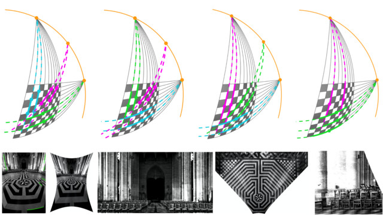
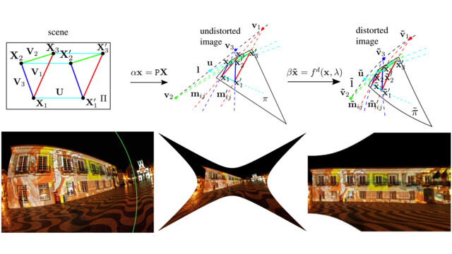
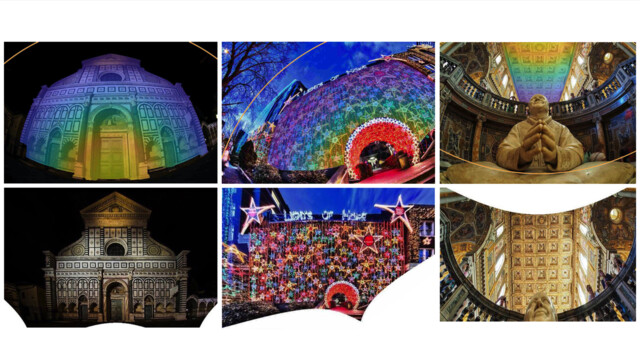
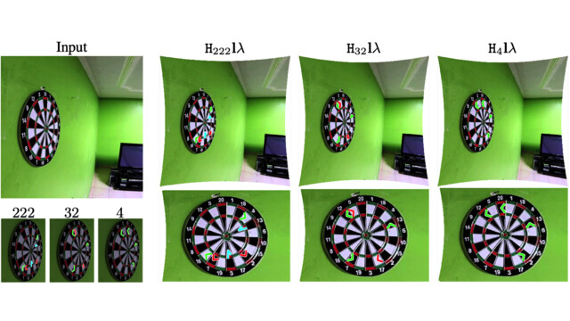
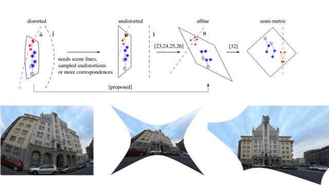
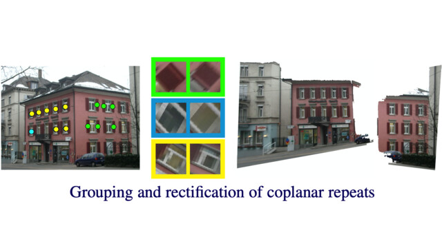
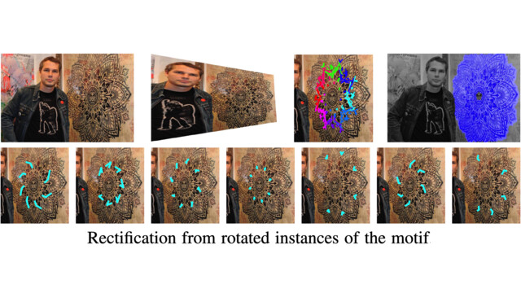
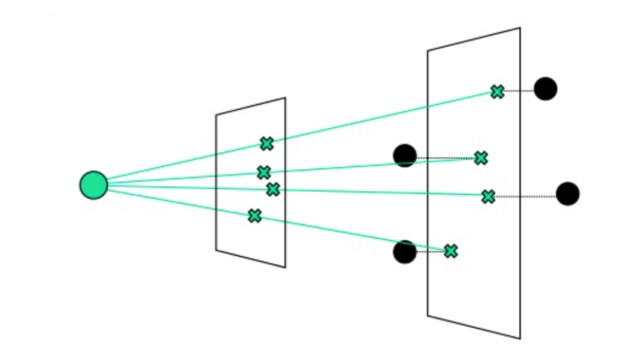

James Pritts
Facebook Reality Labs Research
Postdoc
About
I am a Post-Doctoral Research Scientist in computer vision at Facebook Reality Labs Research working with Michal Perdoch, where my work focuses on the geometric calibration and auto-calibration of multi-camera capture systems. I also advise The Machine Learning Lab at Ukrainian Catholic University in Lviv. Prior I worked in The Applied Algebra and Geometry Group at The Czech Institute for Informatics, Robotics, and Cybernetics (CIIRC) led by Tomas Pajdla. I obtained my PhD from Czech Technical University in Prague under the advisement of Ondrej Chum and Zuzana Kukelova.
Publications

Minimal Solvers for Single-View Auto-Calibration
Y. Lochman, O. Dobosevych, R. Hyrniv, J. Pritts
Oral Presentation at Workshop on Applications for Computer Vision (WACV) 2021
Oral Presentation at Workshop on Applications for Computer Vision (WACV) 2021

Minimal Solvers for Rectifying from Radially-Distorted Conjugate Translations
J. Pritts, Z. Kukelova, V. Larsson, Y. Lochman, O. Chum
IEEE Transactions on Pattern Analysis and Machine Intelligence (TPAMI) 2020
IEEE Transactions on Pattern Analysis and Machine Intelligence (TPAMI) 2020

Minimal Solvers for Rectifying from Radially-Distorted Scales and Change of Scales
J. Pritts, Z. Kukelova, V. Larsson, Y. Lochman, O. Chum
International Journal of Computer Vision (IJCV) 2020
International Journal of Computer Vision (IJCV) 2020

Rectification from Radially-Distorted Scales
J. Pritts, Z. Kukelova, V. Larsson, O. Chum
Asian Conference on Computer Vision (ACCV) 2018
Best Paper Award
Asian Conference on Computer Vision (ACCV) 2018
Best Paper Award

Radially-Distorted Conjugate Translations
J. Pritts, Z. Kukelova, V. Larsson, O. Chum
Conference on Computer Vision and Pattern Recognition (CVPR) 2018
Conference on Computer Vision and Pattern Recognition (CVPR) 2018

Coplanar Repeats by Energy Minimization
J. Pritts, D. Rozumnyi, M. P. Kumar, O. Chum
British Machine Vision Conference (BMVC) 2016
British Machine Vision Conference (BMVC) 2016

Detection, Rectification and Segmentation of Coplanar Repeated Patterns
J. Pritts, O. Chum, J. Matas
Conference on Computer Vision and Pattern Recognition (CVPR) 2014
Conference on Computer Vision and Pattern Recognition (CVPR) 2014

Approximate Models for Fast and Accurate Epipolar Geometry Estimation
Advising
Yaroslava Lochman, M.Sc.
Thesis: Minimal Solvers for Single-View Auto-Calibration
consulting for Facebook Reality Labs
consulting for Facebook Reality Labs
Kostiantyn Liepieshov, B.Sc.
Thesis: Manhattan Frame Detection in Lens Distorted Images
ML Lab at Ukrainian Catholic University
ML Lab at Ukrainian Catholic University
Awards
Teaching
2017 — 2018
Image Retrieval, Instructor - Master's level, Ukrainian Catholic University
2013 — 2016
Pattern Recognition and Machine Learning,
TA - Bachelor's level, Czech Technical University in Prague